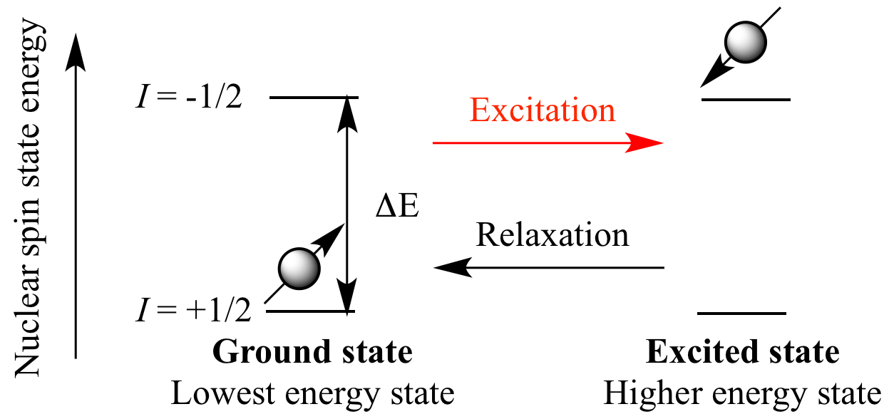
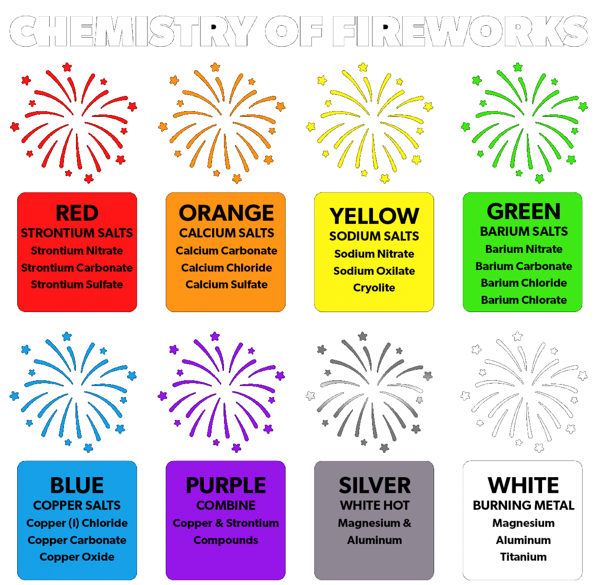

Learn about what makes fireworks look spectacular!
What causes certain colors in fireworks?
Fireworks can produce an insane amount of colors and effects through the controlled combustion of different chemical compounds. Different elements can cause specific colors to be made and can also cause various effects in fireworks by emitting light and specific wavelengths when they are excited and then returning to their ground state through relaxation.
Fireworks make different colors and effects by using different chemical compounds that are selected by people called pyrotechnicians. A pyrotechnician is just a fancy word for describing people who are experts at working with fireworks. When the compounds are ingested, the heat causes the atoms that are in the compound to become excited, and the electrons in the outermost energy level jump to higher energy levels. When the electrons return to their ground state, they release energy in the form of light, which produces the vibrant colors that we all see and love.
To explain further, excitation and relaxation are two really important processes that happen at the atomic and molecular level in fireworks and lead to the emission of light, which produces the colors and effects that we see. When the protactic mixture is ignited, heat and energy are released, causing the atoms in the compounds to become excited. In this excited state, the electrons that are in the outermost energy level jump to higher energy levels; this process is known as excitation.
After the electrons are excited, they are in an unstable state and quickly return to their original energy level, releasing energy in the form of light. This process is called rexlation. The energy that's released in relaxation corresponds to a specific wavelength of light, which in turn determines the color of the light that's emitted.
The specific color of light emitted depends entirely on the energy difference between the excited state and the ground state of the atom or molecule. For example, when copper compounds are excited, they emit blue light with a specific wavelength that corresponds to the energy difference between the excited and ground states of copper atoms.
The specific colors that are made by fireworks do depend on the chemical composition of the compounds that are being used. For example, copper compounds make blue colors, while barium compounds make green colors. Stronium compounds make red colors, and sodium compounds make yellow colors.
To add to that, fireworks can actually produce various effects too, like sparkles, crackles, and whistles. These effects are made by incorporating different elements into the compounds. For example, metals like aluminum and magnesium can be used to make sparkles, while carbon and sulfur can be used to create crackling sounds.
In conclusion, by using different chemical compounds and adding different elements, pyrotechnicians can make a wide range of colors and effects in fireworks. The effects and colors are made by the excitation and relaxation of atoms as the electrons in the compounds jump to higher energy levels and then return to their ground state, which releases energy in the form of light and sound.